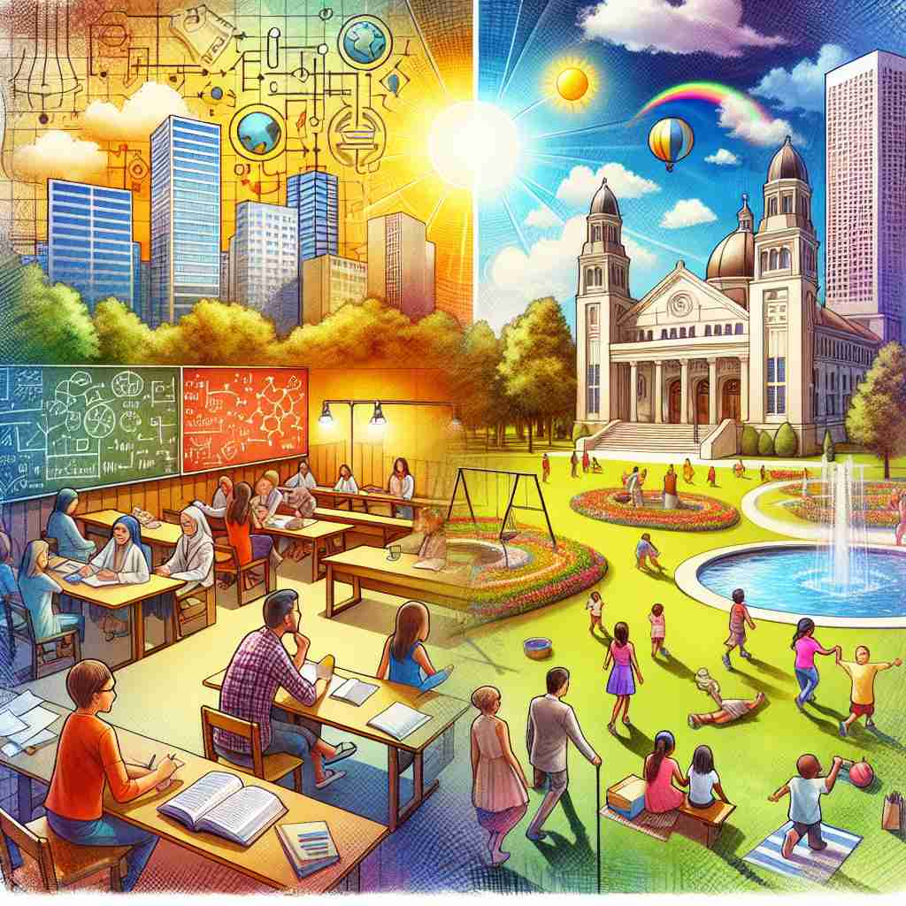

💬 The students are learning about science in a secular education environment. 学生们在世俗的教育环境中学习科学。

💬 The people enjoy their daily lives in a secular society with many activities. 人们在一个充满各种活动的世俗社会中享受他们的日常生活。
💬 The students are learning about science in a secular education environment. 学生们在世俗的教育环境中学习科学。
💬 The people enjoy their daily lives in a secular society with many activities. 人们在一个充满各种活动的世俗社会中享受他们的日常生活。
🧠 记忆'secular'的关键在于理解其核心含义'与宗教无关的'。想象一条分隔线，将世界分为宗教和非宗教两部分。'Secular'就位于非宗教那一侧，代表着世俗的、长期的、缓慢变化的概念。这个核心概念贯穿了该词的所有含义，无论是形容政府、时间周期，还是描述生活方式或神职人员。
🔈 ['sekjʊlə]
🗝️ adj. not connected with religious or spiritual matters 与宗教或精神事务无关
🎭 在一个热闹的城市中，节日庆典正在广场上举行。五光十色的灯饰、愉悦的音乐和香甜的美食让人们流连忘返。尽管周围有各种宗教建筑，这个活动完全是世俗的，只为了让市民们享受欢乐时光，不涉及任何宗教或精神事务。
💬 France has a secular government that separates church and state. 法国拥有一个世俗政府，将教会与国家分开。
🌳 由词根 'secul-'（世俗、时间）加上形容词后缀 '-ar' 组成，表示与宗教无关的或世俗的事物。
💡 可以联想 'secular' 为 'separate from religious' 的意思，把它和宗教分开的概念联系起来，以此记住它表示世俗的或和平常事物相关的含义。
🗝️ adj. occurring once every century or similarly long period 发生在每个世纪或类似的长时间周期一次
🎭 在一个庄严的历史博物馆内，一群参观者正围绕着一个巨大的时间胶囊展品。导游解释道，这个胶囊每百年开启一次，以展示一个世纪的发展变迁，仿佛历史在他们面前真实重现，令人感受到时间的宏伟和神秘。
💬 The comet makes a secular appearance every 75 years. 这颗彗星每75年出现一次。
🤔 从"世俗的"延伸为"世俗时间的"，特指长时间周期
🗝️ adj. lasting for a long time or happening slowly over a long period 持久或缓慢发生的时间较长
🎭 在一片广袤的森林中，一棵古老的橡树屹立在中央，枝繁叶茂。它经历了无数季节的更替，在这漫长的年代中，慢慢成长，象征着坚韧与持久，这样的持久性便是‘secular’的精髓所在。
💬 There has been a secular decline in church attendance over the past few decades. 过去几十年，教堂的出席率出现了长期的下降。
🤔 基于长时间周期的概念，引申为长期的或缓慢发生的
🗝️ adj. living outside of a religious order or not bound by religious rules 不属于宗教团体或不受宗教规则约束的生活
🎭 在一座宁静的小镇上，一位开朗的老妇人正围坐在社区中心的几位年轻人中间，分享人生经验。尽管她深切理解宗教重要性，但她选择以世俗的方式生活，不受任何宗教规则约束，过着自由自在的生活方式。
💬 He left the monastery to live a secular life. 他离开了修道院，过上了世俗生活。
🤔 从"非宗教的"延伸为"不受宗教约束的"
🗝️ n. a member of the clergy who is not bound by religious vows or rules 一位不受宗教誓言或规章束缚的 clergy 成员
🎭 在古老的大教堂中，一位神情自若的神职人员站在讲坛上，分享世俗事务中的智慧与指导。作为一名不受特定宗教誓言限制的教士，他面向社区提供帮助，是信众心中的明灯。
💬 As a secular priest, he was able to live among the community he served. 作为一名世俗神父，他能够生活在他所服务的社区中。
🤔 从形容词用法引申为名词，指不受宗教规则约束的神职人员